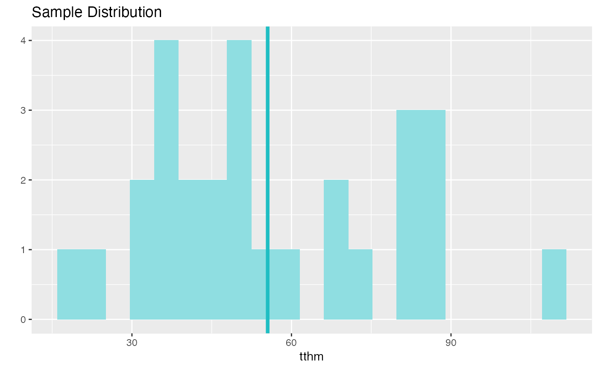
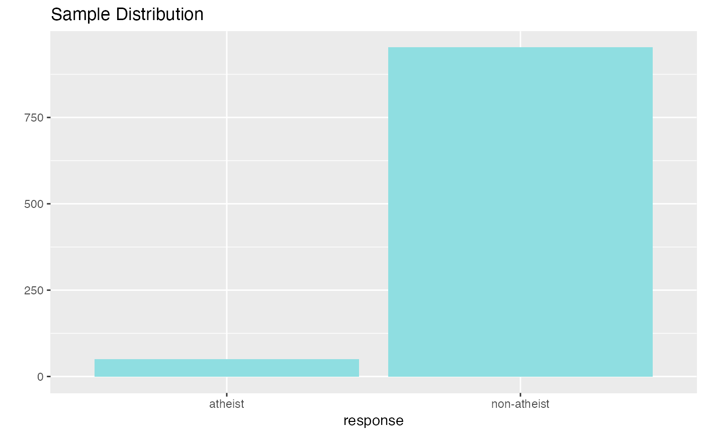

Hypothesis tests and confidence intervals
inference(y, x = NULL, data, type = c("ci", "ht"), statistic = c("mean", "median", "proportion"), success = NULL, order = NULL, method = c("theoretical", "simulation"), null = NULL, alternative = c("less", "greater", "twosided"), sig_level = 0.05, conf_level = 0.95, boot_method = c("perc", "se"), nsim = 15000, seed = NULL, verbose = TRUE, show_var_types = verbose, show_summ_stats = verbose, show_eda_plot = verbose, show_inf_plot = verbose, show_res = verbose)
| y | Response variable, can be numerical or categorical |
|---|---|
| x | Explanatory variable, categorical (optional) |
| data | Name of data frame that y and x are in |
| type | of inference; "ci" (confidence interval) or "ht" (hypothesis test) |
| statistic | parameter to estimate: mean, median, or proportion |
| success | which level of the categorical variable to call "success", i.e. do inference on |
| order | when x is given, order of levels of x in which to subtract parameters |
| method | of inference; "theoretical" (CLT based) or "simulation" (randomization/bootstrap) |
| null | null value for a hypothesis test |
| alternative | direction of the alternative hypothesis; "less","greater", or "twosided" |
| sig_level | significance level, value between 0 and 1 (used only for ANOVA to determine if posttests are necessary) |
| conf_level | confidence level, value between 0 and 1 |
| boot_method | bootstrap method; "perc" (percentile) or "se" (standard error) |
| nsim | number of simulations |
| seed | seed to be set, default is NULL |
| verbose | whether output should be verbose or not, default is TRUE |
| show_var_types | print variable types, set to verbose by default |
| show_summ_stats | print summary stats, set to verbose by default |
| show_eda_plot | print EDA plot, set to verbose by default |
| show_inf_plot | print inference plot, set to verbose by default |
| show_res | print results, set to verbose by default |
Results of inference task performed
data(tapwater) # Calculate 95% CI using quantiles using a Student t distribution inference(tthm, data=tapwater, statistic="mean", type="ci", method="theoretical")#> Single numerical variable #> n = 28, y-bar = 55.5239, s = 23.254 #> 95% CI: (46.507 , 64.5409)inference(tthm, data=tapwater, statistic="mean", type="ci", boot_method = "perc", method="simulation")#> Single numerical variable #> n = 28, y-bar = 55.5239, s = 23.254 #> 95% CI: (47.1417 , 64.0951)# Inference for a proportion # Calculate 95% confidence intervals for the proportion of atheists data("atheism") library("dplyr")#> #>#> #> #>#> #> #>#> #> #>us12 <- atheism %>% filter(nationality == "United States" , atheism$year == "2012") inference(y = response, data = us12, statistic = "proportion", type = "ci", method = "theoretical", success = "atheist")#> Single categorical variable, success: atheist #> n = 1002, p-hat = 0.0499 #> 95% CI: (0.0364 , 0.0634)